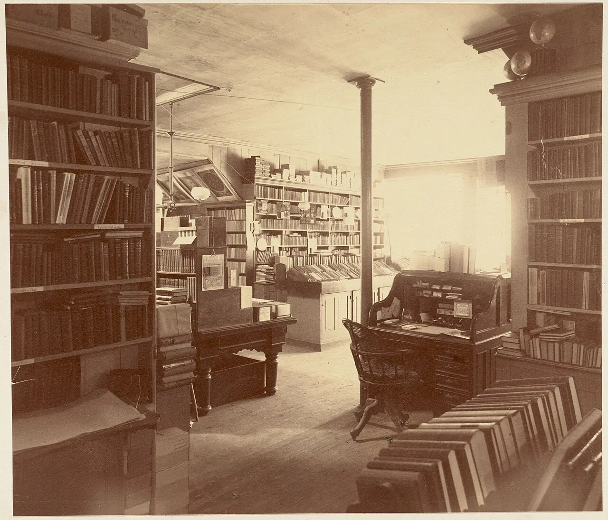
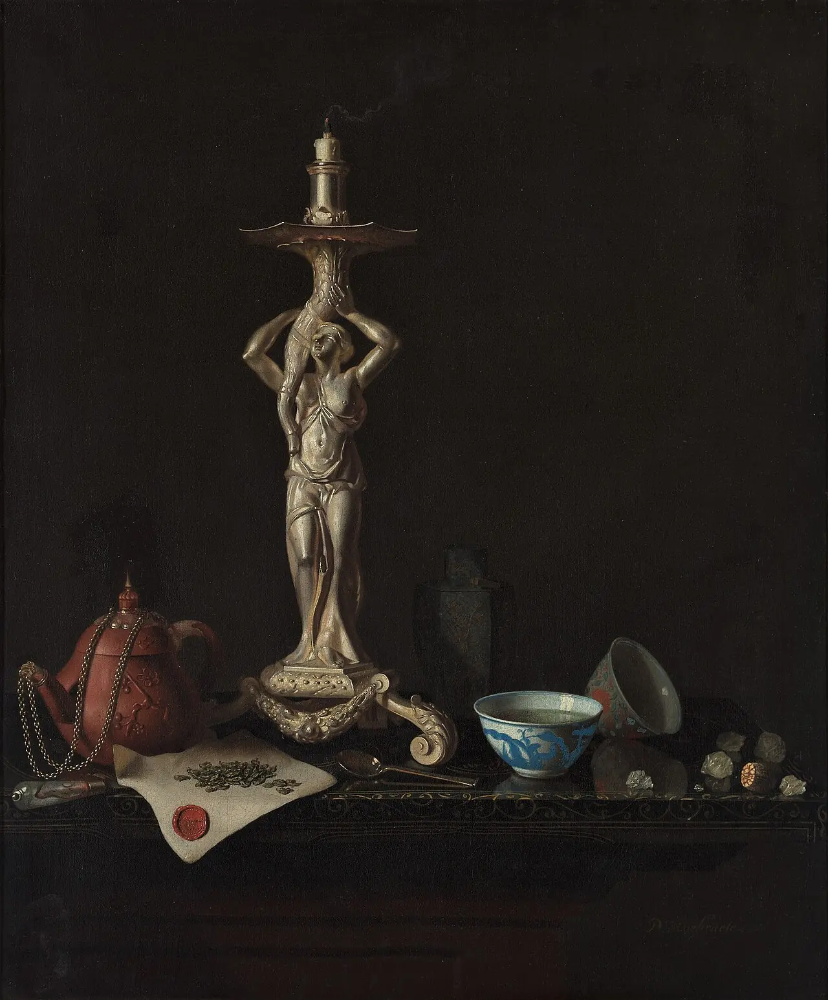

Gallery
Gallery
Atmospheric photographs, held in a green and gold frame.

The candlelit study
Where the evening begins

The old shelves
Books that remember hands

A rose after midnight
Dark, but not severe

Silver in the dark
A small, cold light

Ink and memory
The archive of a quiet room

Still life with light
Objects left behind
All images are public domain or CC0 atmospheric photographs from Wikimedia Commons. No character portraits are used.